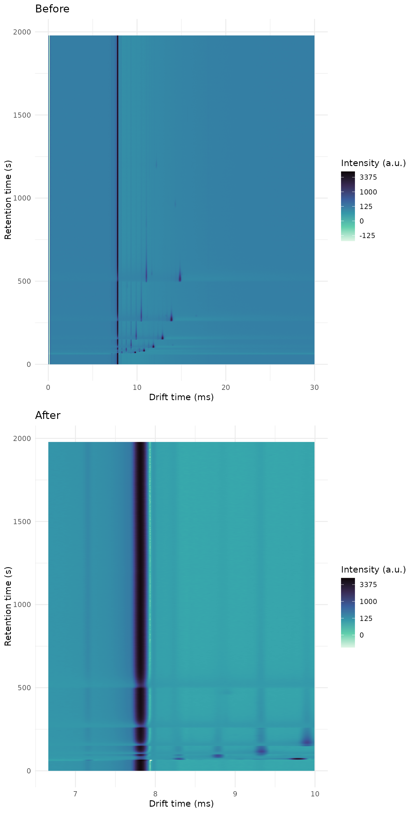

creating-a-workflow-step.RmdIn this vignette we show how samples can be modified in a batch, using delayed operations. GCIMS uses delayed evaluations were possible, so dataset modifications can be executed in a more efficient way and without using too much RAM.
You may want to read this if you want to add support for a new algorithm that modifies all the samples in a dataset.
# The folder where we will download the samples:
samples_directory <- "threeketones"
# Download the ketones dataset:
tryCatch({
download_three_ketones_dataset(samples_directory)
message("Download successful")
}, error = function(e) {
message("The download of the samples did not succeed. The vignette can't continue.")
message(conditionMessage(e))
knitr::knit_exit()
})
#> Download successfulYou will first have to define a function that takes one sample as an argument and returns that sample modified:
cutDrift_Sample <- function(x, dt_from, dt_to) {
# dt_from and dt_to are indices of the drift time vector.
# This function crops a sample in the drift time axis.
# Check that we are given a sample
if (!inherits(x, "GCIMSSample")) {
stop("Internal error, this will never happen")
}
# You can use internal slots, or accessor functions. Accessors are more reliable
# because the class internal representation may change in the future
x <- subset(x, dt_idx = dt_from:dt_to)
#x@data <- x@data[dt_from:dt_to,]
#x@drift_time <- x@drift_time[dt_from:dt_to]
# Check that we return a valid sample:
if (!validObject(x)) {
stop("The sample is not valid.")
}
return(x)
}Then you need a function that applies to the whole dataset and returns the dataset. You can use this template for now:
cutDrift_Dataset <- function(x, dt_from, dt_to) {
delayed_op <- GCIMS:::GCIMSDelayedOp(
name = "cutDrift", # Give a human-readable name
fun = cutDrift_Sample, # The function that is applied to the sample
params = list(dt_from = dt_from, dt_to = dt_to) # The arguments that function needs
)
x$appendDelayedOp(delayed_op)
# Return the dataset, invisibly:
invisible(x)
}Load the dataset:
annotations <- read.csv(file.path(samples_directory, "annotations.csv"))
dataset <- GCIMSDataset$new(
annotations,
base_dir = samples_directory,
on_ram = TRUE # You probably should set this to FALSE if you have more
# than a handful of samples. See ?GCIMSDataset.
)
dataset
#> A GCIMSDataset:
#> - With 3 samples
#> - Stored on RAM
#> - No phenotypes
#> - No previous history
#> - Queued operations:
#> - read_sample:
#> base_dir: /__w/GCIMS/GCIMS/vignettes/threeketones
#> parser: default
#> - setSampleNamesAsDescriptionGet the first sample of the dataset, and see the drift time vector at indices 500 and 1200:
sample_before <- dataset$getSample(1)
dtime_before <- dtime(sample_before)
dtime_before[1000]
#> [1] 6.66
dtime_before[1500]
#> [1] 9.993333Cut the sample:
dataset <- cutDrift_Dataset(dataset, dt_from = 1000, dt_to = 1500) # indices
#> Warning: GCIMS:::GCIMSDelayedOp(...) is deprecated. Please use DelayedOperation(...)
#> instead.
dataset
#> A GCIMSDataset:
#> - With 3 samples
#> - Stored on RAM
#> - No phenotypes
#> - History:
#> - read_sample:
#> base_dir: /__w/GCIMS/GCIMS/vignettes/threeketones
#> parser: default
#> - setSampleNamesAsDescription
#> - Queued operations:
#> - cutDrift:
#> dt_from: 1000.0
#> dt_to: 1500.0The dataset has now a pending operation, we can execute it:
dataset$realize()And get the sample, modified:
sample_after <- dataset$getSample(1)
dtime_after <- dtime(sample_after)
dtime_after[1]
#> [1] 6.66
dtime_after[length(dtime_after)]
#> [1] 9.993333Same sample before and after:
plot_grid(
plot(sample_before) + labs(title = "Before"),
plot(sample_after) + labs(title = "After"),
nrow = 2
)
Modifying your samples is something nice. Sometimes you want to save some additional information in the sample that can help you analyze the results.
You can do that with the proc_params slot.
cutDrift2_Sample <- function(x, dt_from, dt_to) {
# dt_from and dt_to are indices of the drift time vector.
# This function crops a sample in the drift time axis.
# Check that we are given a sample
if (!inherits(x, "GCIMSSample")) {
stop("Internal error, this will never happen")
}
# Get the original range of the drift time
original_dt_length <- length(dtime(x))
# In the future we will provide accessors instead of using @ slots directly.
x@data <- x@data[dt_from:dt_to,]
x@drift_time <- x@drift_time[dt_from:dt_to]
new_dt_length <- length(dtime(x))
# Save it in the proc_params list:
x@proc_params$cutDrift <- list(
original_dt_length = original_dt_length,
new_dt_length = new_dt_length
)
# Check that we return a valid sample:
if (!validObject(x)) {
stop("The sample is not valid.")
}
return(x)
}We use the same function for the dataset:
cutDrift2_Dataset <- function(x, dt_from, dt_to) {
delayed_op <- GCIMS:::GCIMSDelayedOp(
name = "cutDrift2", # Give a human-readable name
fun = cutDrift2_Sample, # The function that is applied to the sample
params = list(dt_from = dt_from, dt_to = dt_to) # The arguments that function needs
)
x$appendDelayedOp(delayed_op)
# Return the dataset, invisibly:
invisible(x)
}
dataset <- GCIMSDataset$new(
annotations,
base_dir = samples_directory,
on_ram = TRUE # You probably should set this to FALSE if you have more
# than a handful of samples. See ?GCIMSDataset.
)
dataset
#> A GCIMSDataset:
#> - With 3 samples
#> - Stored on RAM
#> - No phenotypes
#> - No previous history
#> - Queued operations:
#> - read_sample:
#> base_dir: /__w/GCIMS/GCIMS/vignettes/threeketones
#> parser: default
#> - setSampleNamesAsDescription
dataset <- cutDrift2_Dataset(dataset, dt_from = 1000, dt_to = 1500) # indices
#> Warning: GCIMS:::GCIMSDelayedOp(...) is deprecated. Please use DelayedOperation(...)
#> instead.
dataset
#> A GCIMSDataset:
#> - With 3 samples
#> - Stored on RAM
#> - No phenotypes
#> - No previous history
#> - Queued operations:
#> - read_sample:
#> base_dir: /__w/GCIMS/GCIMS/vignettes/threeketones
#> parser: default
#> - setSampleNamesAsDescription
#> - cutDrift2:
#> dt_from: 1000.0
#> dt_to: 1500.0The dataset has now a pending operation, we can execute it:
dataset$realize()And get the sample, modified:
sample_after <- dataset$getSample(1)We have those parameters saved:
sample_after@proc_params$cutDrift
#> $original_dt_length
#> [1] 4500
#>
#> $new_dt_length
#> [1] 501In the previous example, we have to manually getSample()
on each sample to get those additional results. This is going to be very
slow.
What we would like to have is a data frame with three columns: the sample name, the original dt_length and the new dt_length, so we have a summary for all the dataset.
For this to happen fast and efficiently, we need to do it in two steps:
The extraction is usually a simple function that extracts from a sample the information you need. Some workflow steps use it to extract normalization factors, other workflow steps use it to extract the RIC or the TIS.
Avoid extracting the whole data matrix, since it will use too much RAM.
The function must take a GCIMSSample, and may return whatever you need. If you need many things, return a list with all of them.
The realize() method will extract the information from
all your samples and save all the extracted information on a list, as
long as the number of samples in your dataset.
Then, it will call the aggregation function, using the
GCIMSDataset as first argument and the list of extracted
information in the second argument.
We must write the aggregation function to convert our objects into whatever we want (a data frame in our example) and save the outcome in the dataset object.
cutDrift_Aggregate <- function(x, extracted_objects) {
# Check that we are given a dataset
if (!inherits(x, "GCIMSDataset")) {
stop("Internal error, this will never happen")
}
# Check that we have as many extracted objects as samples:
if (length(extracted_objects) != length(sampleNames(x))) {
# This should never happen:
stop("Internal error, we always have an extracted object for each sample")
}
# Build the data frame that we want to generate
df <- data.frame(
SampleName = sampleNames(x),
orig_dt_length = NA_integer_,
new_dt_length = NA_integer_
)
# Fill it with information from the extracted objects:
for (i in seq_along(extracted_objects)) {
extracted_object <- extracted_objects[[i]]
df$orig_dt_length[i] <- extracted_object$original_dt_length
df$new_dt_length[i] <- extracted_object$new_dt_length
}
# Save our dataframe in the dataset object:
x$userData$cutDrift <- df
# We always return the whole dataset
return(x)
}We now pass those extraction and aggregation functions as well:
cutDrift3_Dataset <- function(x, dt_from, dt_to) {
delayed_op <- GCIMS:::GCIMSDelayedOp(
name = "cutDrift3", # Give a human-readable name
fun = cutDrift2_Sample, # The function that is applied to the sample
params = list(dt_from = dt_from, dt_to = dt_to), # The arguments that function needs
fun_extract = cutDrift_ExtractSample,
fun_aggregate = cutDrift_Aggregate
)
x$appendDelayedOp(delayed_op)
# Return the dataset, invisibly:
invisible(x)
}
dataset <- GCIMSDataset$new(
annotations,
base_dir = samples_directory,
on_ram = TRUE # You probably should set this to FALSE if you have more
# than a handful of samples. See ?GCIMSDataset.
)
dataset
#> A GCIMSDataset:
#> - With 3 samples
#> - Stored on RAM
#> - No phenotypes
#> - No previous history
#> - Queued operations:
#> - read_sample:
#> base_dir: /__w/GCIMS/GCIMS/vignettes/threeketones
#> parser: default
#> - setSampleNamesAsDescription
dataset <- cutDrift3_Dataset(dataset, dt_from = 1000, dt_to = 1500) # indices
#> Warning: GCIMS:::GCIMSDelayedOp(...) is deprecated. Please use DelayedOperation(...)
#> instead.
dataset
#> A GCIMSDataset:
#> - With 3 samples
#> - Stored on RAM
#> - No phenotypes
#> - No previous history
#> - Queued operations:
#> - read_sample:
#> base_dir: /__w/GCIMS/GCIMS/vignettes/threeketones
#> parser: default
#> - setSampleNamesAsDescription
#> - cutDrift3:
#> dt_from: 1000.0
#> dt_to: 1500.0The dataset has now a pending operation, we can execute it:
dataset$realize()And then get our data frame:
dataset$userData$cutDrift
#> SampleName orig_dt_length new_dt_length
#> 1 Ketones1 4500 501
#> 2 Ketones2 4500 501
#> 3 Ketones3 4500 501Done!
sessionInfo()
#> R version 4.2.3 (2023-03-15)
#> Platform: x86_64-pc-linux-gnu (64-bit)
#> Running under: Ubuntu 22.04.2 LTS
#>
#> Matrix products: default
#> BLAS: /usr/lib/x86_64-linux-gnu/openblas-pthread/libblas.so.3
#> LAPACK: /usr/lib/x86_64-linux-gnu/openblas-pthread/libopenblasp-r0.3.20.so
#>
#> locale:
#> [1] LC_CTYPE=en_US.UTF-8 LC_NUMERIC=C
#> [3] LC_TIME=en_US.UTF-8 LC_COLLATE=en_US.UTF-8
#> [5] LC_MONETARY=en_US.UTF-8 LC_MESSAGES=en_US.UTF-8
#> [7] LC_PAPER=en_US.UTF-8 LC_NAME=C
#> [9] LC_ADDRESS=C LC_TELEPHONE=C
#> [11] LC_MEASUREMENT=en_US.UTF-8 LC_IDENTIFICATION=C
#>
#> attached base packages:
#> [1] stats graphics grDevices utils datasets methods base
#>
#> other attached packages:
#> [1] GCIMS_0.1.0 cowplot_1.1.1 ggplot2_3.4.2 BiocStyle_2.26.0
#>
#> loaded via a namespace (and not attached):
#> [1] tidyselect_1.2.0 xfun_0.38 bslib_0.4.2
#> [4] purrr_1.0.1 colorspace_2.1-0 vctrs_0.6.1
#> [7] generics_0.1.3 viridisLite_0.4.1 htmltools_0.5.5
#> [10] stats4_4.2.3 yaml_2.3.7 utf8_1.2.3
#> [13] rlang_1.1.0 pkgdown_2.0.7 jquerylib_0.1.4
#> [16] pillar_1.9.0 glue_1.6.2 withr_2.5.0
#> [19] BiocParallel_1.32.6 BiocGenerics_0.44.0 lifecycle_1.0.3
#> [22] stringr_1.5.0 ProtGenerics_1.30.0 munsell_0.5.0
#> [25] gtable_0.3.3 ragg_1.2.5 codetools_0.2-19
#> [28] memoise_2.0.1 evaluate_0.20 labeling_0.4.2
#> [31] Biobase_2.58.0 knitr_1.42 fastmap_1.1.1
#> [34] parallel_4.2.3 curl_5.0.0 fansi_1.0.4
#> [37] highr_0.10 scales_1.2.1 BiocManager_1.30.20
#> [40] cachem_1.0.7 sgolay_1.0.3 desc_1.4.2
#> [43] S4Vectors_0.36.2 jsonlite_1.8.4 farver_2.1.1
#> [46] systemfonts_1.0.4 fs_1.6.1 textshaping_0.3.6
#> [49] digest_0.6.31 stringi_1.7.12 bookdown_0.33
#> [52] dplyr_1.1.1 grid_4.2.3 rprojroot_2.0.3
#> [55] cli_3.6.1 tools_4.2.3 magrittr_2.0.3
#> [58] sass_0.4.5 tibble_3.2.1 pkgconfig_2.0.3
#> [61] MASS_7.3-58.3 rmarkdown_2.21 httr_1.4.5
#> [64] R6_2.5.1 signal_0.7-7 compiler_4.2.3